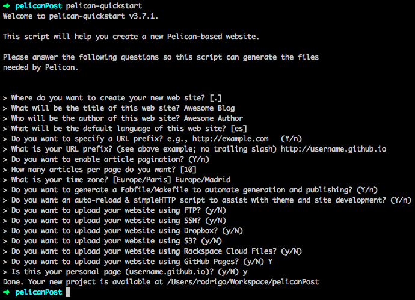
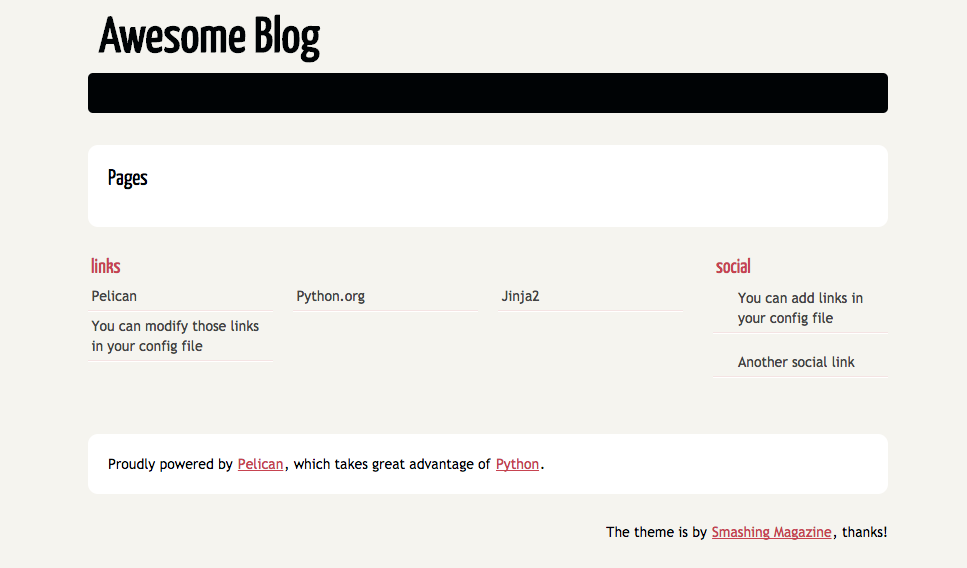
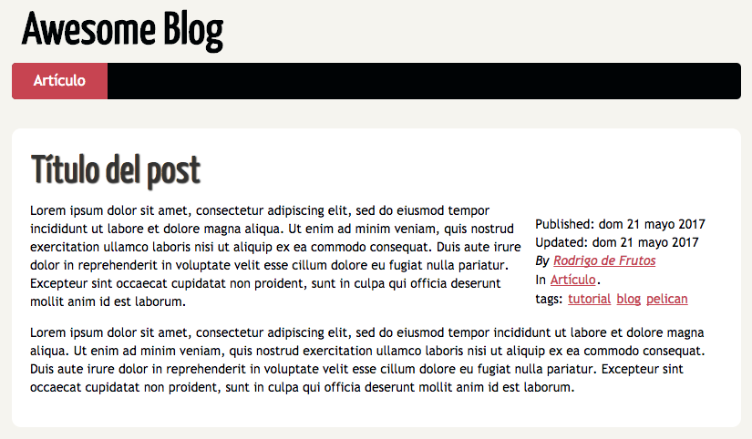

Cómo montar tu propio blog
Publicado el 23 de May de 2017 en Tutoriales • 7 min de lectura
Nota: este artículo detalla la versión anterior de mi blog. Actualmente el artículo se publica usando Github action y varias de las configuraciones y versiones están desactualizadas. Si tienes cualquier duda consulta el repositorio o mándame un mensaje si necesitas un cable ;)
Después de mucho tiempo queriendo escribir algún artículo, finalmente me he decidido empezar por algo sencillo: un pequeño tutorial contando el proceso de creación del blog y su puesta a punto para publicar automáticamente los cambios que realizados. Como ya mencioné anteriormente, este blog está montado usando GitHub Pages, Pelican con Flex-Theme y Travis CI.
A lo largo de este (largo) artículo explicaré como he utilizado todas estas herramientas para crear y automatizar todo el funcionamiento del blog.
Preparando el repositorio
El primer paso para montar el blog es crear un repositorio en el que subir el código. En mi blog he utilizado un repositorio de GitHub, ya que en combinación con GitHub Pages permite mostrar código HTML sin necesidad de montar nada más. Otros populares repositorios, como Gitlab o Bitbucket tienen soluciones similares, aunque hay pasos en el tutorial que pueden variar.
Para crear el repositorio, el único requisito es que su nombre siga el patrón username.github.io, donde username será tu nombre de usuario de Github (en mi caso, darkrodry.github.io). En este repositorio, todo el contenido de la rama master será lo que se muestre en el blog. Yo he creado además otra rama llamada source para subir el código utilizado para generar el blog.
También os recomiendo darle un vistazo al funcionamiento de git submodules, ya que lo utilizaremos más adelante para agregar algunas dependencias necesarias para la compilación.
Iniciando Pelican
Como indican en su web, Pelican es una herramienta escrita en Python que permite generar sitios web estáticos a partir de una serie de ficheros Markdown o reStructuredText.
Para instalar Pelican en tu ordenador necesitas tener Python. Recomiendo usar la versión 3.5 o superior, ya que tuve algún problema usando la 2.7 (si queréis mantener ambas versiones probad pyenv). Pelican se encuentra dentro de pip, por lo que instalarlo es tan sencillo como ejecutar en tu terminal:
pip install pelican
Pelican proporciona un simple quickstart para generar el esqueleto del proyecto, así como los ficheros de configuración y un Makefile para ejecutar el mismo. Para ejecutar este quickstart (dentro de la rama elegida para subir el código al repositorio) escribe en tu terminal el siguiente comando y responde a las preguntas:
pelican-quickstart
En mi blog he usado en gran parte la configuración por defecto, a excepción de:
- nombre y autor del blog
- url: usad la que os debería haber generado GitHub
- cuando pregunte si queréis publicar vuestra web en GitHub Pages responded que sí, y confirmad la url.
No os preocupéis si configuráis algo mal, está configuración se puede modificar más adelante sin ningún problema.

Una vez finalizado el quickstart, podrás observar que se han generado una serie de ficheros y carpetas. Los más importantes son:
- content/: en este directorio va todo el contenido del blog (artículos, imágenes...)
- output/: aquí se almacena el contenido auto generado al usar Pelican. Es muy recomendable agregar este fichero a nuestro .gitignore
- pelicanconf.py: fichero de configuración principal con parámetros comunes y de despliegue local
- publishconf.py: fichero que sobrescribe parte de la configuración de pelicanconf.py con los parámetros necesarios a la hora de publicar
Antes de continuar, puedes comprobar que todo se ha generado correctamente con el siguiente comando:
make html && make serve
Una vez se haya generado el html y se levante el servidor, carga la url http://localhost:8000/ en tu navegador para ver tus avances.

Creando el primer post
Una vez llegados a este punto, es el momento de empezar a agregar contenido al blog. Pelican interpreta que cualquier fichero dentro del directorio content/ es un artículo del blog, y los utilizará para generar el contenido del mismo. Hay una excepción a esto, ya que si creamos una carpeta content/pages/ considerará el contenido de la misma como contenido estático del sitio, como puede ser las páginas con información sobre el autor, contacto o proyectos personales.
Para crear contenido en el blog, puedes utilizar dos formatos: Markdown o reStructuredText. En mi caso he decidido utilizar Markdown ya que estoy más familiarizado con ello y lo uso con algo de frecuencia.
Crear un artículo es tan sencillo como agregar un fichero a la carpeta content/ y escribir dentro lo que quieras contar. Para que este artículo sea considerado como tal, hay que agregar antes un pequeño apartado con información sobre el mismo. El resultado de tu artículo
Title: Título del post (obligatorio)
Date: 2017-05-21 10:20 (obligatorio)
Modified: 2017-05-22 19:30
Category: Artículo
Tags: tutorial, blog, pelican
Slug: articulo-de-ejemplo
Authors: Rodrigo de Frutos
Summary: Resumen sobre el contenido del post
A partir de aquí, el contenido de tu nuevo artículo usando *Markdown*.
Una vez creado el artículo, prueba a generar de nuevo el blog y comprueba el resultado.

Puedes ver más información sobre cómo crear artículos en la documentación de Pelican.
Personalizando el blog
A estas alturas puede ser que estés empezando a dudar del estilo ofrecido por tu blog. Otro de los puntos fuertes de Pelican es que permite cambiar el tema del blog, poniendo a disposición de los usuarios un gran catálogo de temas, además de permitir crear nuestros propios temas. Para mi blog, decidí empezar con la opción sencilla y utilizar un tema ya existente, eligiendo finalmente Flex.
Para agregar este tema (o cualquier otro) al blog, hay que hacer dos pequeños cambios. Lo primero es descargar el código del tema. Yo he decidido importar el tema usando git submodules con el siguiente comando:
git submodule add https://github.com/alexandrevicenzi/Flex.git theme-flex
Una vez tenemos el tema en nuestro repositorio, para que el tema se aplique en el blog hay que modificar el fichero de configuración. Abre el fichero pelicanconf.py y añade la siguiente línea (o modifícala en caso de que ya exista): THEME = "theme-flex".
Pero esta personalización no acaba aquí. Al abrir el fichero de configuración habrás podido observar que hay otros campos que, o están vacíos o te indican que insertes tu información. Tanto Pelican como el tema que hayas elegido te permitirán personalizar mucha información que mostrará en el blog, como puede ser tu nombre, una biografía, tus redes sociales o agregar Google Analytics. En el caso de Flex, puedes consultar la sección de custom settings de su Wiki.
Para terminar, posiblemente quieras tener una bio un poco más extensa que la que te permite el tema (es muy breve, al estilo Twitter). Pelican interpreta que cualquier fichero dentro de content/pages es una página estática, sin formato artículo, a tu blog. Todos los ficheros que agregues en este directorio crearán una nueva entrada en el menú de tu blog.
Actualización automática
La última tarea para dejar tu blog listo es delegar la tarea de la generación del mismo usando integración continua. Para esta tarea he elegido utilizar Travis CI, ya que es un servicio de integración gratuito y muy extendido (y que tenía ganas de probar, la verdad).
El primer paso de todos es crearte una cuenta en Travis CI asignada a tu usuario de GitHub. Para habilitar Travis CI en nuestro proyecto hay que agregar un fichero .travis.yml en tu repositorio con el siguiente contenido:
language: python
python:
- "3.5"
branches:
only:
- [rama con el código, source en mi caso]
before_install:
- sudo apt-get update && sudo apt-get --reinstall install -qq language-pack-es
install:
- pip install -r requirements.txt
script:
- make publish github
env:
global:
- LANG=es_ES.UTF-8
- LC_ALL=es_ES.UTF-8
- secure: [Token de Travis Encriptado]
Como podrás observar, este fichero tiene un campo secure: con un token. ¿De dónde sale este token? Es el encargado de permitir a Travis subir a la rama master el resultado de la generación del blog. Este token se puede generar en la sección de ajustes de tu cuenta de GitHub, en la sección de personal access tokens. Crea tu nuevo token poniéndole un nombre representativo y con permisos completos para acceder a repositorios privados.
Para dar seguridad a este token, la gente de Travis CI tiene un cliente en Ruby con diferentes herramientas, y entre ellas una para cifrar estas claves. Para instalar estas herramientas necesitaremos tener Ruby en nuestro ordenador e instalar una nueva gema:
gem install travis
Una vez instalada, ejecuta el siguiente comando en la raíz de tu repositorio para agregar el token a tu fichero .travis.yml:
travis encrypt GH_TOKEN=<token en bruto> --add --override
Para hacer la subida del blog a GitHub utilizaremos ghp-import, ya que nos facilita bastante la tarea. Para instalarlo simplemente hacemos uso de pip y ejecutamos pip install ghp-import. Para integrar este comando dentro de nuestro CD es necesario hacer un pequeño cambio en el Makefile para ejecutar este comando con los parámetros necesarios:
github: publish
ghp-import -b $(GITHUB_PAGES_BRANCH) -n $(OUTPUTDIR)
@git push -fq https://${GH_TOKEN}@github.com/$(TRAVIS_REPO_SLUG).git $(GITHUB_PAGES_BRANCH) > /dev/null
Para poder automatizar la instalación de todas las dependencias del proyecto utilizaremos el fichero requirements.txt, que agregaremos a nuestro repositorio para poder llevarnos el blog a cualquier lado sin miedo. Para obtener este fichero basta con ejecutar el siguiente comando:
pip freeze > requirements.txt
Este comando de pip almacena todos los paquetes que hayas instalado usando pip en tu ordenador, así que es probable que agregue dependencias que no lo son. Si crees que algo de lo que se ha agregado al fichero no es un requisito del blog, no dudes en borrarlo y probar si Travis sigue generando correctamente el blog.
Una vez hemos terminado de configurar todo lo necesario para tener el blog con despliegue automático, simplemente agrega los últimos cambios y súbelos al repositorio. Pasado uno o dos minutos, deberías ver el resultado de todo el tutorial publicado en tu GitHub Pages personal. ¡Ahora solo te queda crear artículos y mantener actualizado tu blog!